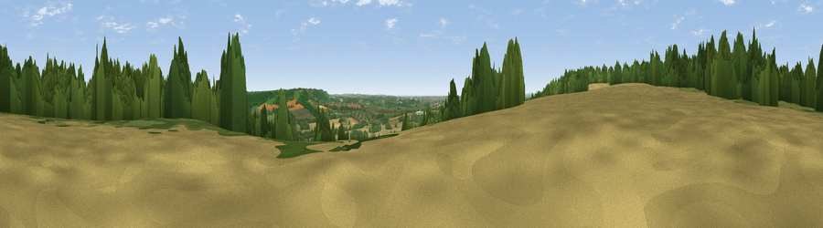

Viewpoint near Boughton Aluph
#25595 in England · top 45% of its area beats it · near Boughton AluphWhere it is
The exact computed spot (TR 04075 49675). Click the marker for map links.
The view, rendered

A 360° render of this exact spot computed from the terrain model, tree cover and land cover — summer colours, afternoon light, calibrated against photographs of famous viewpoints. Real trees, hedges and buildings will differ in detail.
The panorama
Grey silhouette: terrain skyline in each direction (720 bearings, Earth curvature and refraction included). Dashed green: skyline with trees (+15 m) and buildings (+8 m) as obstacles. Blue strip: how far the ground is visible on each bearing.
Where the view opens
Wedge length = distance to the farthest visible ground on that bearing (vegetation-aware). Rings at 10, 25 and 50 km.
What fills the view
43% cropland · 32% woodland · 22% grassland · 2% built-up ·
Angular shares of the visible panorama (visual magnitude), not map area. Landscape diversity 0.51 (0–1 Shannon).
Key numbers
More beautiful places nearby
The staircase of upgrades: each row has a higher view potential than everything closer. Driving times are estimates from straight-line distance, calibrated against real road routing — check an actual route before setting out.
| Place | Direction | Drive | Score |
|---|---|---|---|
| Viewpoint near Boughton Aluph | WSW · 2 km | ~4 min | 66.7 |
| Viewpoint near Wye | SE · 4 km | ~10 min | 70.9 |
| Viewpoint near Westwell | WSW · 6 km | ~13 min | 72.2 |
| Viewpoint near Lympne | SSE · 16 km | ~28 min | 72.6 |
| Tolsford Hill | SE · 16 km | ~29 min | 77.9 |
| Viewpoint near Capel-le-Ferne | ESE · 23 km | ~38 min | 80.2 |
| Viewpoint near Willingdon | SW · 66 km | ~89 min | 83.4 |
| Wilmington Hill | SW · 68 km | ~91 min | 85.4 |
51.20981, 0.92031 · source: screening · position refined by local search. Computed location — check access rights before visiting.